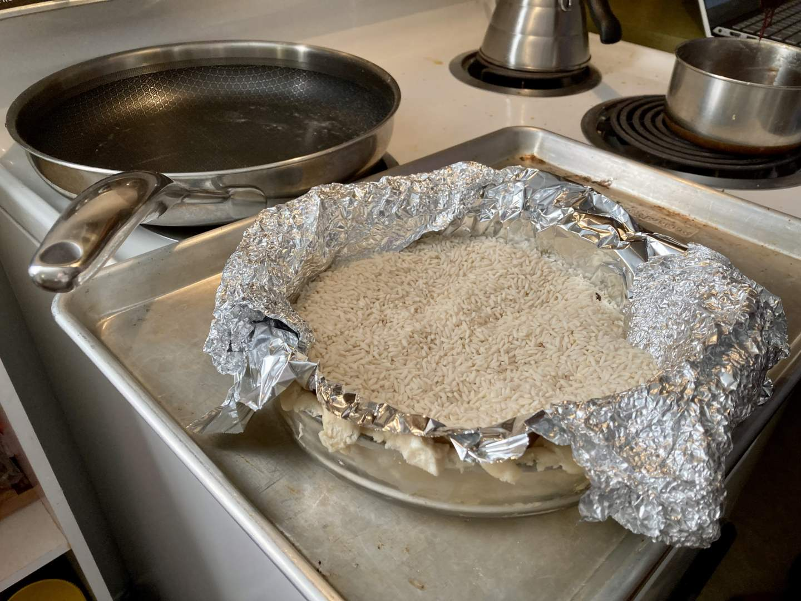
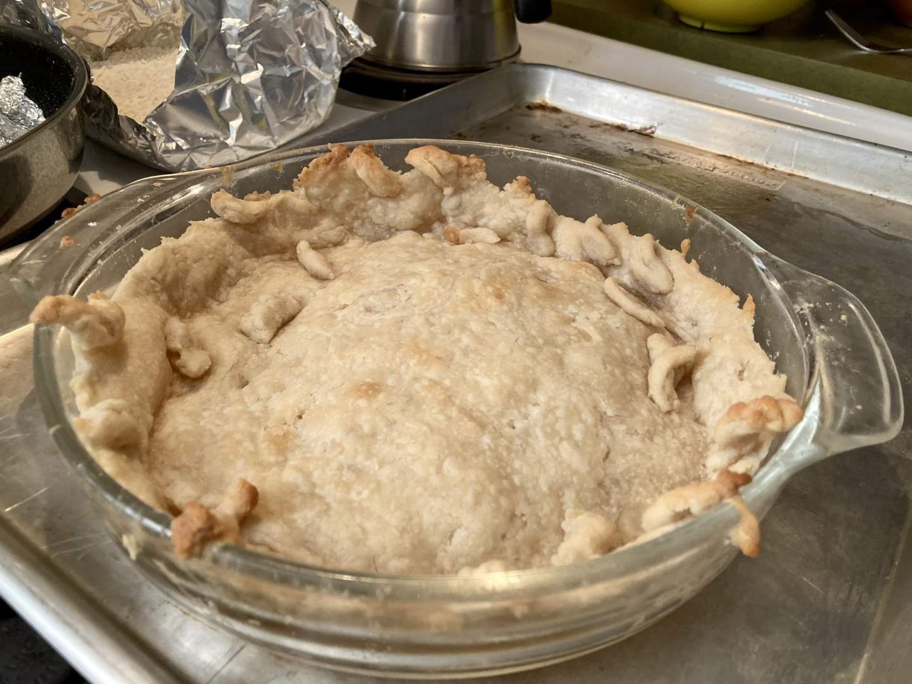
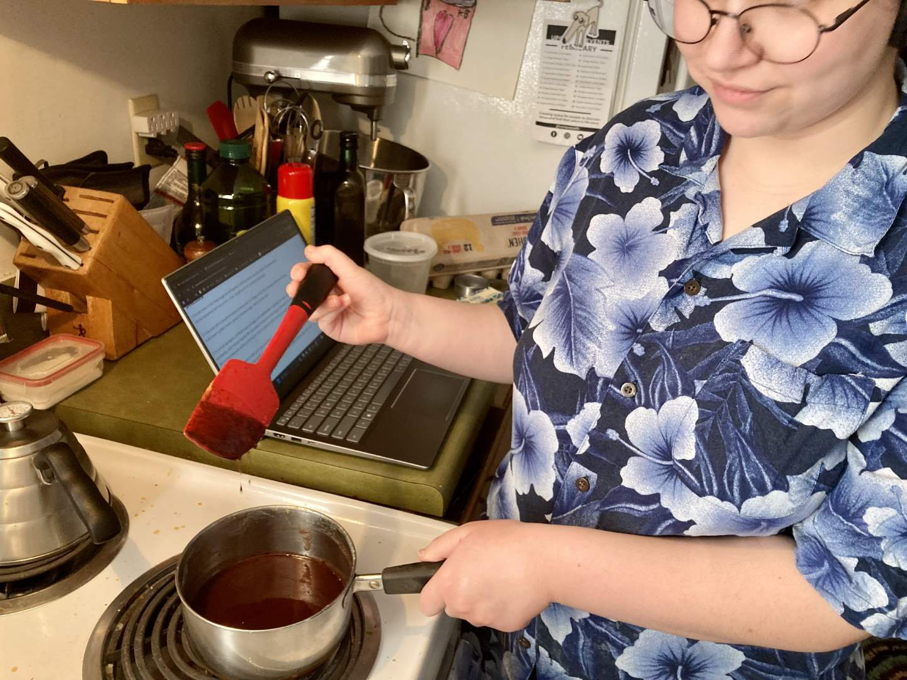
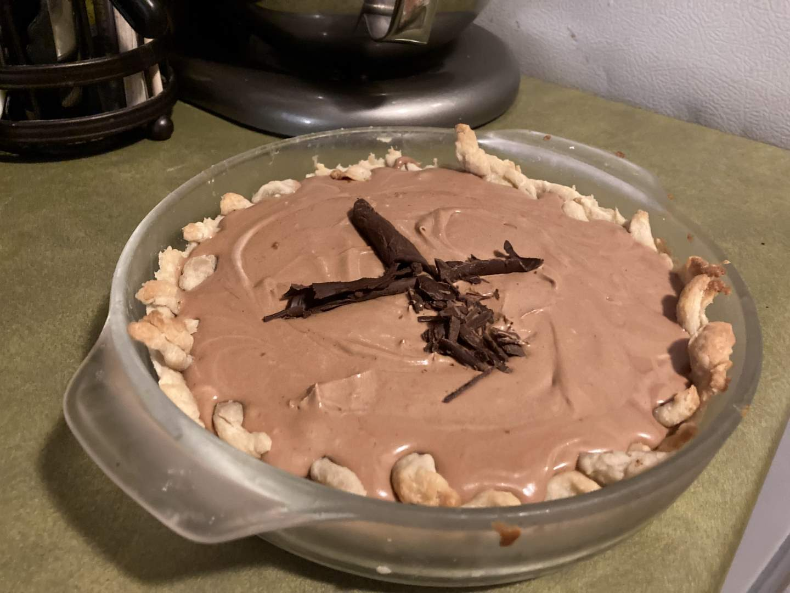
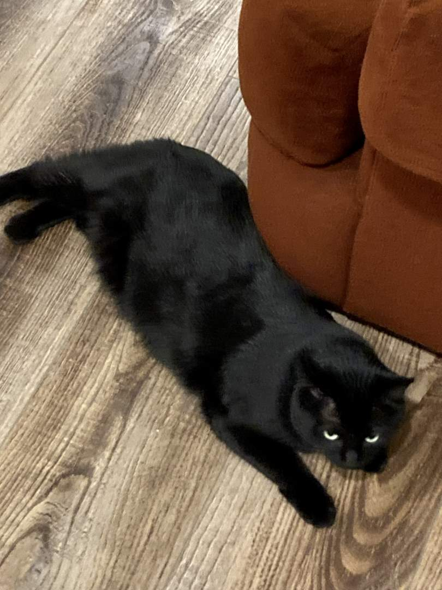

Pie 33: French Silk
2024-02-08Filling recipe from Taste of Home.
Crust recipe from Tastes Better From Scatch.
Taste:
Difficulty:
Vibes:
Suggested pairing: beef stroganoff
If you were to look up the phrase “melt-in-your-mouth goodness” in a dictionary, you would find a recipe for French silk pie. It is a relatively simple pie with limited ingredients, which is what drew us to it. We were visiting friends for dinner and neither of us found time to prepare a dessert the day before. Nor did we have much time after Ben finished school and I got off work. Plus, we knew that a predominately chocolate pie would be a crowd-pleaser, a safe bet to offer to friends in comparison to some other pies we have made. (And chocolate pies are now the first flavor category we’ve sampled three times.)
Thankfully, we had a single pie crust left over from a previous dish. It was already chilled so I could easily roll it out and transfer it into a pie dish. Since I wanted to be a little bit fancy, I added little curls around the edge of the crust to evoke the image of a braid. The results were not ideal, but we were in too much of a rush to dedicate sufficient time to good decoration. Ben lined the crust with aluminum foil and filled it with his pie weight of choice: dry rice. We put it in the oven, assuming it would be safe and all would go fine. How woeful our error!
Upon removing the pie weight and foil, we discovered that the crust had slipped down the sides of the glass dish and there were small bits of pastry strewn about the partially baked crust. It was devastating. This slippage occurred because the walls of the pie dish were extra steep, not sloping gently enough to give the crust traction as it baked, given the little overhang I had left to add support and grip. As if we hadn’t suffered enough, we also forgot to poke the bottom of the crust with a fork to allow air to escape, which led to the formation of large bubbles. We popped these and the result was…salvageable.
French silk pie is a cream pie as the filling and crust are both completely cooked before being joined together (see wikipedia). For a custard pie, which is what I assumed this was before doing some research, the filling and crust bake together in the oven.
I combined eggs and sugar on the stove, whisking constantly to prevent the eggs from scrambling. Once they were hot enough, I added vanilla and chocolate, creating a thick chocolate sauce. Then came the whipping. To create the delightfully airy texture of French silk pie, butter is whipped, combined with the cooled chocolate sauce, and then folded together with the whipped cream--gently, to prevent air from escaping. Finally, we poured the filling into the pre-baked crust and froze it for a short period until we left for dinner. Ben shredded on some dark chocolate in a rushed attempt to add some style.
The pie was firm and cool throughout despite not having chilled for the recommended six hours. It coated the tongue with a soft & creamy chocolate flavor that made you want to take a deep sigh and lean back into a comfy chair. (I imagine this is the feeling Ferrero Rocher ad execs attempt to conjure). I think a healthy dollop of whipped cream would have made this pie award-winningly scrumptious. The hiccups along the way held back the pie from being a solid 8/8 on the taste and vibes scale, but it would only take greater care, the important lessons learned, and more time to make this pie fit for royalty.
